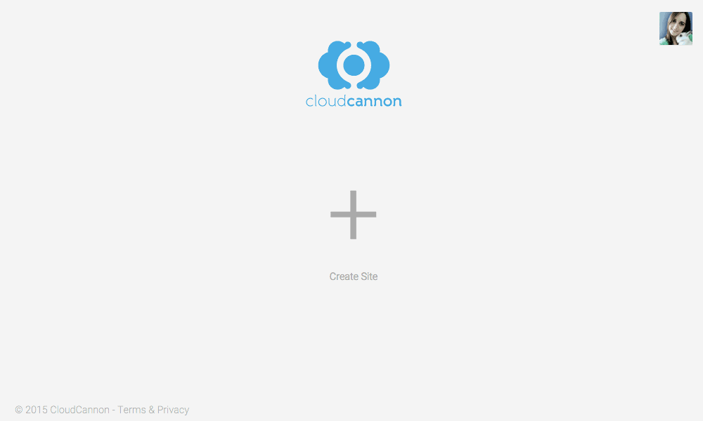
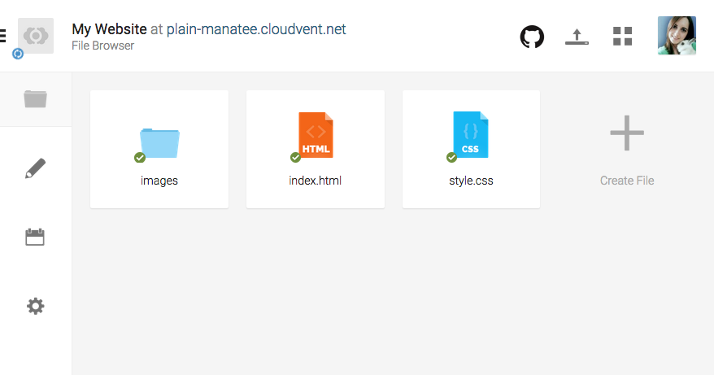
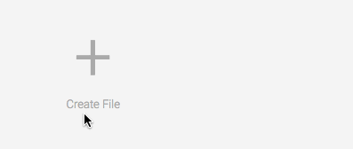
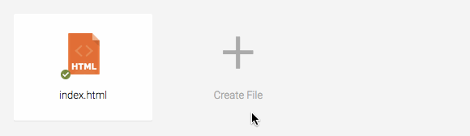
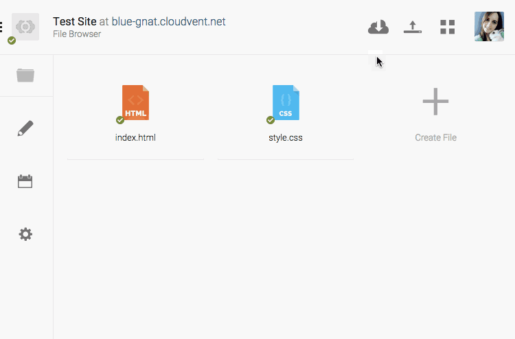
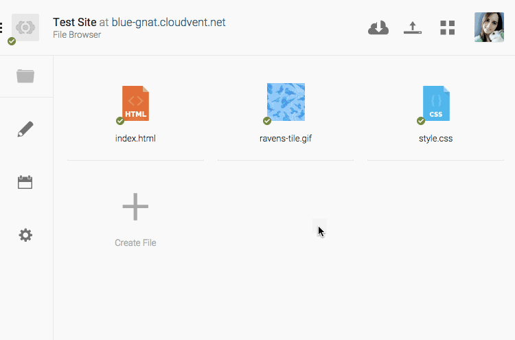

Cloud Cannon lets us edit our code and preview our site
Create a New Project

In CloudCannon, click “Create Site” and make a project
Site Template

We will create images, index and style in our project folder
Template Files
images
All your images go in this folder.
index.html
HTML code for your home page.
style.css
CSS code for your whole website.
Create Index Page

Create index.html in your dashboard
Index Page Starter Code
<!DOCTYPE html>
<html>
<!-- head only used by the browser -->
<head>
<title>My Page Title</title>
<link rel="stylesheet" href="style.css">
</head>
<!-- body contains the visible page content -->
<body>
<!-- My HTML Code Goes Here-->
</body>
</html>
Copy this HTML code into your index.html
HTML Head
<!DOCTYPE html>
<html>
<!-- head only used by the browser -->
<head>
<title>My Page Title</title>
<link rel="stylesheet" href="style.css">
</head>
<!-- body contains the visible page content -->
<body>
<!-- My HTML Code Goes Here-->
</body>
</html>
The head contains a browser tab title and a CSS file link
HTML Body
<!DOCTYPE html>
<html>
<!-- head only used by the browser -->
<head>
<title>My Page Title</title>
<link rel="stylesheet" href="style.css">
</head>
<!-- body contains the visible page content -->
<body>
<!-- My HTML Code Goes Here-->
</body>
</html>
All of our page content HTML goes between the body tags
Create Stylesheet

Create style.css in your dashboard
Choose a Background Type
Tiled
A smaller image which repeats
to fill the whole page.
Full-screen
A large image which stretches
to fill the whole page.
Right-click an image and “Save Image As…“
Upload Background Image

Upload the background image to CloudCannon
Move Background to Images Folder

Use the image options to “Move to new folder”
Tiled Background
If you want a repeating background, use this code.
Add to your style.css:
html {
background-image: url('images/ravens-tile.gif');
}
Make sure to choose an image which tiles nicely!
Full-Screen Background
If you’d like a full-screen background, use this code.
Add to your style.css:
html {
background-image: url('images/tree-cover.jpg');
background-size: cover;
background-attachment: fixed;
}
Make sure to choose a nice large image!
Background Ideas
Take a few minutes to make your background look how you want it.